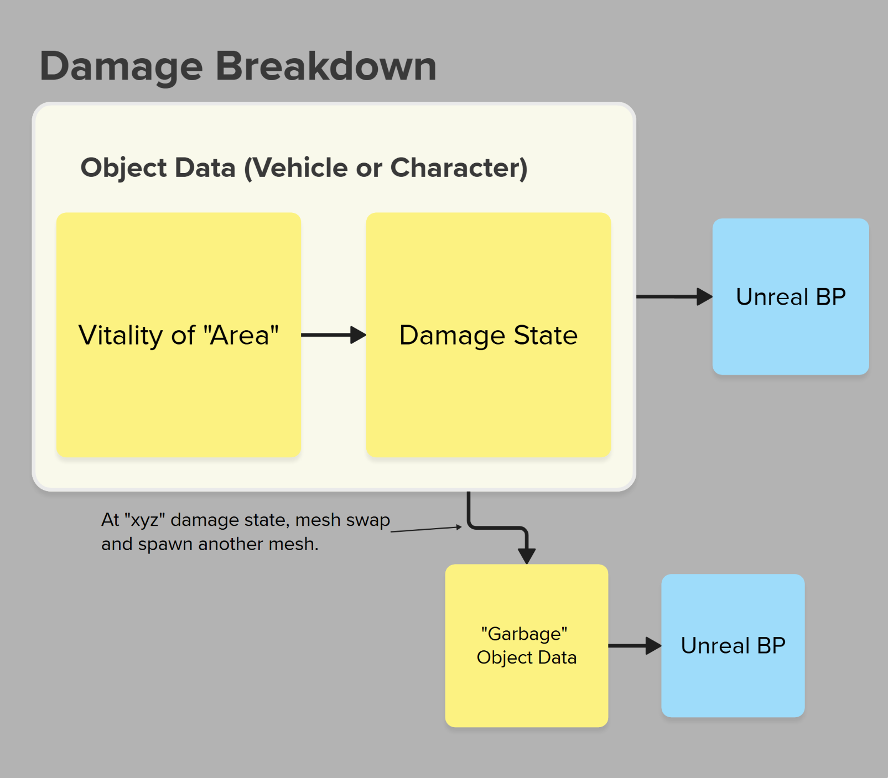

Halo: Campaign Evolved was my first project at Halo Studios and is considered a remake of the original Halo: Combat Evolved. The idea was to stay as close as possible to what the original game felt like, but with a modern look. This was done using a hybrid engine built on Halo's original systems - combined with Unreal Engine 5.
Integrating characters and vehicles was one of my main responsibilities on this project. This included preparing or managing rigs and skeletons, authoring physics/collision meshes, retargeting animations, initial game-design tuning, proper IK to weapon/ground functionality, and more. The complexity of the integration varied but there was always a lot to keep track of. Because of the complexity of the integration, there was much back and forth between the design teams for functionality, the art teams for visual fidelity, and engineering for technical implementation to ensure the assets were working properly and meeting the needs of the game.
I had the opportunity to rig the Warthog and perform the initial integration of the asset into the game at the beginning of this project. I was also tasked with the initial vehicle tuning for an Xbox leadership demo, despite having no prior experience with vehicle tuning. Through a lot of research, testing, and iteration, I was able to get it functioning similarly to the original Halo: Combat Evolved Warthog, and it was well received during the demo.
This experience provided a great opportunity to improve my mechanical rigging skills and gain a deeper understanding of how Havok's vehicle and physics systems work. The model was created by Dan Sarkar.
Looking back, there are several things I could have done better. I should have been more thorough in understanding the standards and conventions for naming, organizing, and structuring the rig. There are also some fidelity improvements I would have approached differently if I had more time, such has secondary animation on the antenna with UE's anim dynamics, adding some controlability on the mirrors and some other doodads on the rig. Overall, though, I think the project turned out well and was a valuable learning experience.
A significant amount of my work on this project involved what I would call "data archaeology"—the process of digging through old data of older assets from the past halo games. This mainly included searching through legacy animation files, transferring, and retargeting these to newer skeletons. The animations ranged anywhere from 15 to over 2,000 animations per asset, all of which required a specific set of rules to be followed to ensure they worked properly in-game.
I created personal tools and scripts to help ease this process by identifying which animations were needed and retargeting them in bulk. Unfortunately, with not a ton of time to expand on these tools, they were very much a one-off solutions and would never be scalable enough to be used by a larger team, but they worked well as proof-of-concept and I importantly learned the value of batch-processing. This is definenitely a tool I would like to expand on in the future.
Another aspect of my work on this project was integrating the damage and destruction systems for vehicles. This included authoring collision meshes, physics meshes, and working with design to make sure weakspots were properly defined and the damage felt right. The damage system consists of levels of damage affecting the vehicle's performance and appearance. I had to ensure that the damage meshes were properly set up to reflect these changes in-game.

Currently, I have the privilege of working at Halo Studios as a Technical Artist focused on character and vehicle integration within a properitery and Unreal stitched engine. My work spans rigging, physics setup, gameplay asset integration, and tool development. I work closely with modeling, animation, game design, and FX teams to ensure assets function reliably and meet both visual fidelity and gameplay needs.